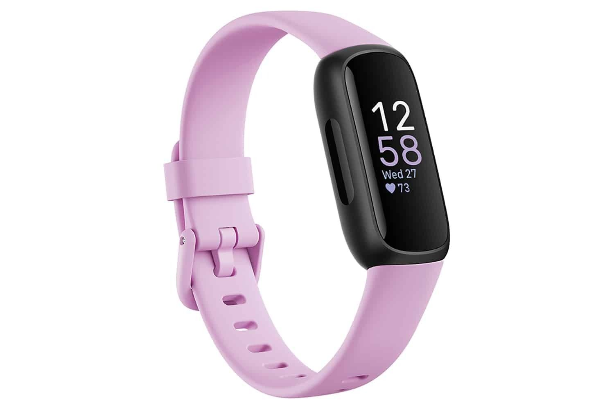

Entry-Level Wellness & Fitness Band
Feel Better.
Live Inspired.
The Fitbit Inspire series is an affordable, all-day wellness tracker with a color AMOLED display, 24/7 heart rate monitoring, sleep stages, SpO2, stress tracking, Active Zone Minutes, and up to 10 days of battery life — managed through the Fitbit app.

What is Fitbit Inspire Series?
Fitbit's Beginner-Friendly Wellness Tracker
The Fitbit Inspire series (including Inspire 2 and Inspire 3) is Fitbit's entry-level fitness and wellness tracker designed for anyone looking to build healthier habits. It features a slim color AMOLED touchscreen, 24/7 heart rate monitoring, sleep stage tracking with a Sleep Score, SpO2 blood oxygen monitoring, stress management scoring, Daily Readiness Score, Active Zone Minutes, and 20+ exercise modes, all accessible through the intuitive Fitbit app, which comes with 6 months of Fitbit Premium for new users.
How To Use
Get Started with Fitbit Inspire in 6 Simple Steps
Download the Fitbit App
Install the Fitbit app on your iOS or Android phone. A Google account is required. Create your Fitbit account or sign in to get started.
Set Up & Pair Your Inspire
Charge the tracker fully, open the Fitbit app, tap "Set Up a Device," choose your Inspire model, and follow the Bluetooth pairing instructions to connect it to your phone.
Enter Your Personal Profile
Input your age, height, weight, and step goal so Fitbit can personalize your daily activity targets and calorie burn estimates accurately.
Set Up Workout Shortcuts
In the Fitbit app, choose up to 6 exercise shortcuts from 20+ modes, like running, yoga, or cycling, so you can quickly launch a tracked workout from your wrist.
Track Activity & Sleep Automatically
Wear the Inspire all day and night, it automatically tracks steps, calories, Active Zone Minutes, and sleep stages including light, deep, and REM sleep.
Review Your Stats in the App
Open the Fitbit app to check your Sleep Score, Daily Readiness Score, stress levels, heart rate trends, SpO2 data, and workout summaries in a clear, organized dashboard.
VIDEO TUTORIAL
See Fitbit Inspire in Action
Benefits
Why Users Choose Fitbit Inspire
Advanced Sleep & Wellness Tracking
Get a nightly Sleep Score, track sleep stages, monitor SpO2, and receive a Daily Readiness Score that tells you when your body is ready to push harder or rest.
Active Zone Minutes
Earn Active Zone Minutes based on your heart rate zones, workouts in cardio or peak zones count double, helping you meet weekly exercise goals more efficiently.
Up to 10-Day Battery Life
A lightweight, slim design with up to 10 days of battery means you can track your health continuously without frequent charging interruptions.